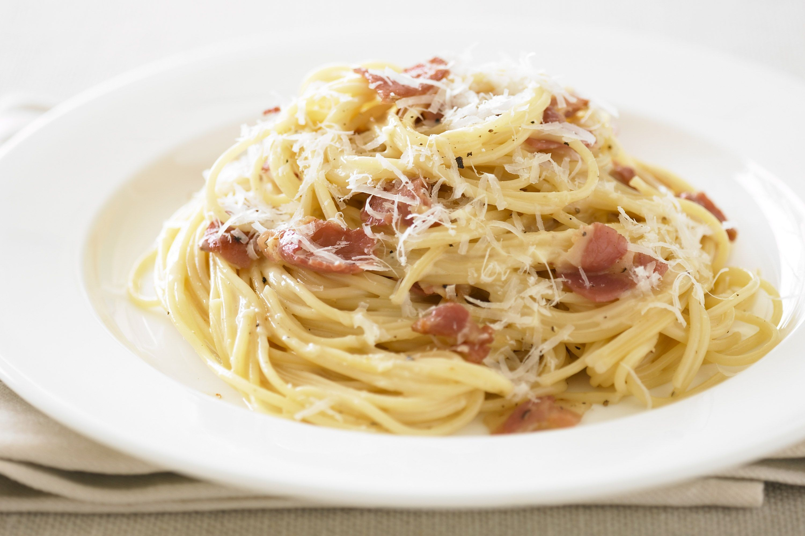

Carbonara
 
Description
- Bacon 300g
- Eggs 2
- Pasta you like 500g
- Onions 2 medium size
- Cream
- Cheese 100g (Advised Parmesan)
- Boil a pasta
- Dice bacon and onions
- Fry bacon on the pan Bacon don't need oil or olive just wait for fat to melt
- When fat melt from bacon add diced onions
- Fry it for 2 min then add cream and cheese
- Add some seasoning you like and stir the sauce garlic is great additiion
- When sauce is boilnig switch burner off
- Separate yolk from whites and add yolk to sauce
- Stir it and switch a burner on to the point when sauce start to boil
- Add pasta to sauce stir until combine
- Enjoy you meal!